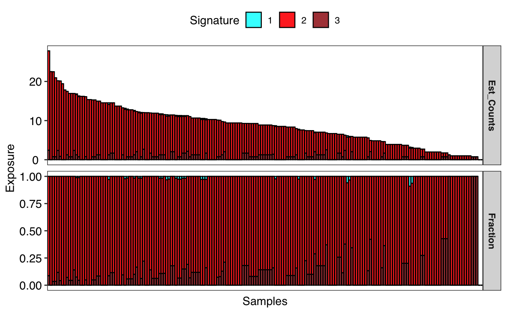
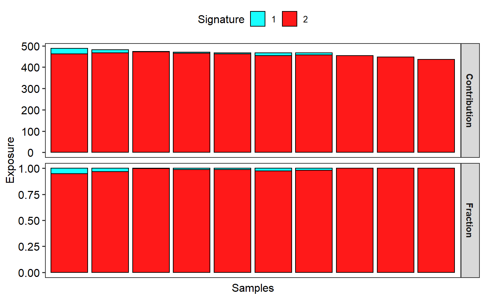

Currently support copy number signatures and mutational signatures.
show_sig_exposure( Signature, sig_names = NULL, cutoff = NULL, base_size = 12, font_scale = 1, rm_space = FALSE, hide_samps = TRUE )
| Signature | a |
|---|---|
| sig_names | set name of signatures, can be a character vector. |
| cutoff | a cutoff value to remove hyper-mutated samples. |
| base_size | overall font size. |
| font_scale | a number used to set font scale. |
| rm_space | default is |
| hide_samps | if |
a ggplot object
# Load mutational signature load(system.file("extdata", "toy_mutational_signature.RData", package = "sigminer", mustWork = TRUE )) # Show signature exposure show_sig_exposure(sig2)#> Warning: Removed 6 rows containing missing values (position_stack).# Load copy number signature load(system.file("extdata", "toy_copynumber_signature.RData", package = "sigminer", mustWork = TRUE )) # Show signature exposure show_sig_exposure(sig)